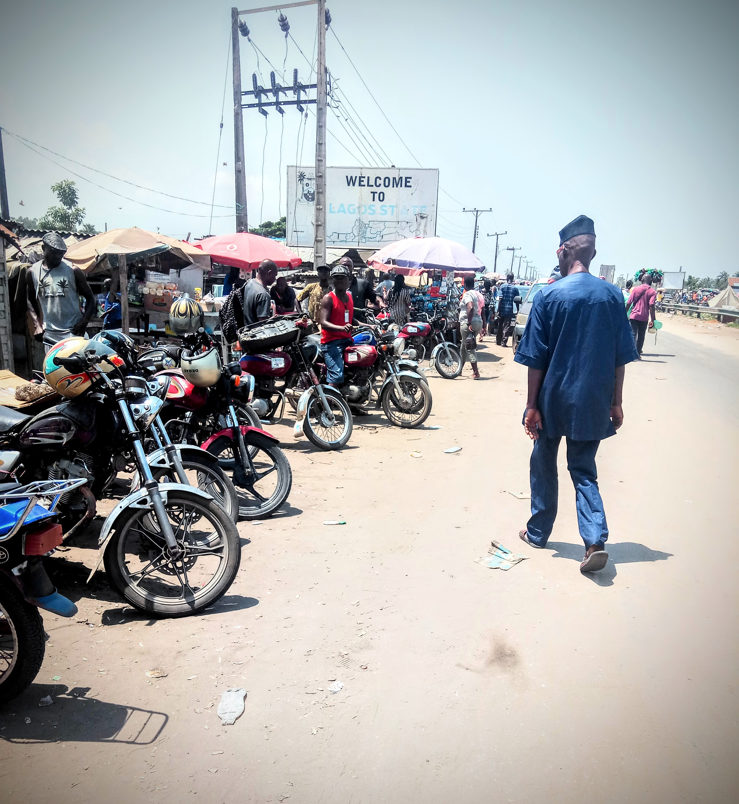

The Initial Journey: 2002-2008
Patience comes from Hohoe, a town of 100,000 in Ghana's Volta Region. Growing up close to the border of Togo, Patience saw many community members crossing the border frequently for work since opportunities were few in her home town. She also knew people who traveled to work across more distant parts of the region, including an uncle who had moved to Lagos, Nigeria. The prospect of travel to live in a big city was a constant on her mind.
Upon her graduation from secondary school in 2002, she received an invitation from her uncle to come to Lagos to live and work in his tailor shop. Patience welcomed the invitation, which had the potential to be a life-changing opportunity for her.
To make the journey, her parents gave her a substantial amount of money to cover the cost of transportation, food and border-crossing fees. In total, Patience would need to cross three borders and pass through numerous milestones on her journey to Lagos. Patience would also need a passport and a yellow fever vaccination certificate (neither of which was difficult to obtain).
By Trotro to Togo
In 2003, Patience began her journey, leaving Hohoe by trotro to travel to the Ghana-Togo border at the towns of Aflao and Kodjoviakopé. Trotros are privately owned mini buses, minivans and pickup trucks that operate like shared taxis. They travel fixed routes and depart only when filled to capacity. Trotros are often crowded and uncomfortable, yet they provide a convenient and affordable mode of transportation.

Patience didn't have any problem crossing the border because she had both the right documents and enough money to pay a border-crossing fee. She was surprised that she had to pay money at the border even though she had been warned. Entering Togo was the first time she had ever crossed into another country. She was nervous about traveling alone, but was also very excited to see what was beyond the border.
Once on the Togo side of the border, Patience changed some of her money from Ghanaian cedis to CFA francs and boarded another minibus heading towards Lomé, which is the largest city in Togo. There, she found a bus for her next destination.
Busing it to the Togo-Benin Border
In total, Patience traveled 83 kilometres from the Ghana-Togo border to the Togo-Benin border. The bus from Lomé took her to a location between Sanvekondji and the border village of Hillacondji. To cross into the Benin Republic, she was asked to show her passport and health certificate and, again, was required to pay a fee to the officers. By this point, she had spent about half of the money given to her for transportation.
Stopover in Cotonou, Benin
Continuing on her journey, Patience traveled from the Togo-Benin border, to Cotonou, the largest city in the Benin Republic. In Cotonou, Patience boarded a new bus headed to Nigeria. At this point, Patience was three-quarters of the way through her journey, and had one more border to cross.
Benin-Nigeria Border
Patience’s final border crossing was at the border towns of Krake and Seme between the countries of Benin and Nigeria. There she had to stand in a long queue of cross-border traders and business people who enter Nigeria daily for work. Patience was asked to show her passport and health certificate, and then asked to pay yet another fee. At this point, most of the cash she was carrying had run out, but she had enough to have her passport stamped and was allowed to enter the country.
"When we got to Seme border, they asked me for my passport and what I am coming to Nigeria to do. It was not a difficult experience to pass the border, but we had to pay money to officers at the border."
 The border between Benin and Nigeria is one of the busiest in the region. Crossing each day is expensive, and those who cannot pay the fees either face delays, are harassed or, simply, turned away.
There is both a formal and informal border crossing between Krake and Seme. Having a passport determines how one crosses the border, and those with passports can enter in cars or on foot. Those without passports often rely on informal foot or okada (public bike transportation) paths. Entry and exit at the formal border was possible for Patience because she carried a passport.
Although Patience's passport issued by the Economic Community of West African States (ECOWAS) made traveling between Ghana, Togo, Benin and Nigeria relatively easy, she still was required to pay money to immigration officials at the border crossings of Aflao-Kodjoviakopé, Sanve Kondji-Hillacondji and Seme-Krake. Even though she was traveling with an ECOWAS passport, the fees were significant. If she had not been carrying a sufficient amount of funds, she would have faced numerous barriers along the way. In more recent years, technology has been introduced at border crossings to facilitate scanning of ECOWAS passports.
Patience's journey is an example of the challenges and limitations of the Protocol on Free Movement. While it was designed to support movement between the countries of West Africa with the ECOWAS passport, different regional border practices can limit its value.
To Badagry, Lagos State, Nigeria
After crossing the last border in her long journey, Patience changed her CFA notes to Nigerian naira and boarded a danfo - a public bus similar to the trotros in Ghana. The bus traveled to Badagry, a coastal town in the region of Lagos through which people coming from the border must pass. There were immigration stops between Seme and Badagry, and Patience learned from other passengers to negotiate with officers to avoid running out of money. She arrived in Badagry, and then found a bus towards Aguda, the area in Lagos where her uncle lived.
Arrival: Aguda, Lagos State, Nigeria
Lagos is the most populous city in Africa, and Patience felt overwhelmed by the number of people when she first arrived even though she enjoyed the bustling sights and sounds of the city. Her uncle picked her up from the bus stop in Aguda, a suburb in Surulere, which, at the time, was an area where a number of Ghanaians from Patience's community had settled.
From 2003-2009, Patience lived in Aguda with her uncle and worked at a thriving tailor shop where she learned how to sew women's clothing.
By 2009, after receiving five years of training in Lagos, Nigeria, Patience was ready for a new challenge and decided to return to Ghana. She felt confident about her tailoring skills and had saved up enough money to travel.
Five Years in Accra, Ghana
In 2009, Patience chose not to return home to Hohoe, and instead, she relocated to Accra, Ghana's largest city. There she worked as a seamstress and lived with her sister. Her uncle also returned to Ghana at the time, so it was a good time for her to return to Ghana. When another three years had passed, Patience was still searching for ways to improve her skills as a seamstress. She liked the style of a popular tailor back in Lagos and set out to apprentice with him. In 2012, she left Accra and embarked on a journey back to Lagos. On this journey, she found that travel requirements had changed significantly since her first trip to Nigeria in 2003. She spent even more money paying fees at the border between Ghana and Togo, Togo and Benin, and Benin and Nigeria and she found more checkpoints after the Seme border.
 Click
Click